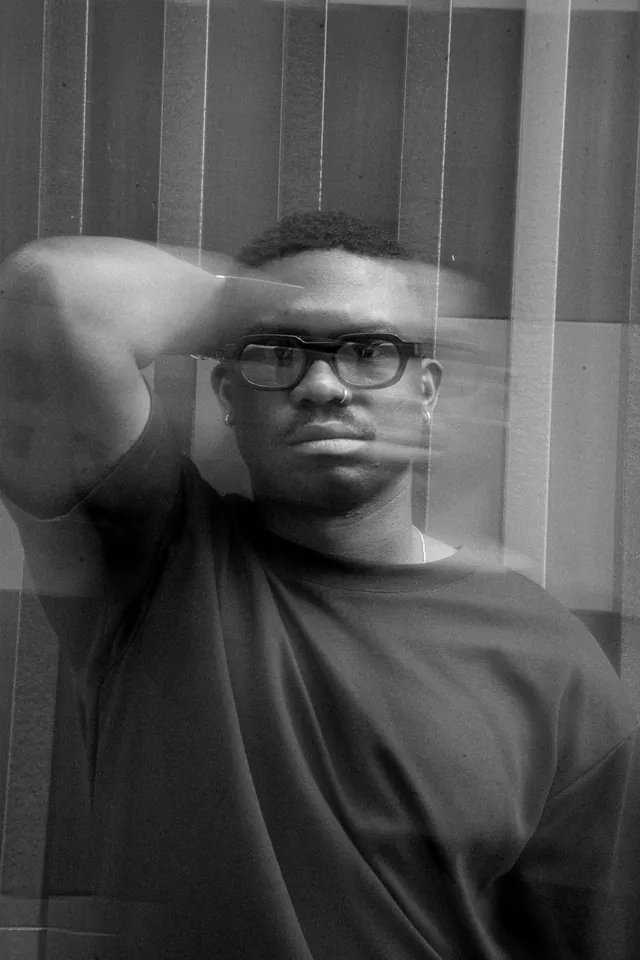

DJ in Wien
Für Marken-Events, Hochzeiten und Ballnächte in Wien: Benji Holiday legt Open Format auf, mit Erfahrung von Events für Lacoste, Philipp Plein und BOSS. Er reist aus München an und plant deinen Abend so genau, als wäre er um die Ecke.
Resident-Erfahrung: Rote Sonne · Bob Beaman · Harry Klein

Mode, Palais und ein zweiter Floor
Wien hat rund zwei Millionen Einwohner und eine Feierkultur, die anders funktioniert als in München. Hier gibt es eine echte Ballsaison, in der von Jänner bis zum Faschingsende Abend für Abend in Frack und Abendkleid getanzt wird. Es gibt Prachtbauten an der Ringstraße, Palais in der Innenstadt und Dachterrassen mit Blick über die Stadt. Und es gibt eine Modeszene mit Flagship-Stores, Showrooms und Pop-up-Formaten, die ihre Kundschaft gern mit einem Abend überrascht.
Store-Openings und Marken-Abende
Für Wien bietet Benji vor allem Fashion- und Brand-Events an. Ein Opening oder ein Kundenabend im Store hat eigene Regeln: Die Musik ist Teil der Markeninszenierung, sie soll Atmosphäre schaffen, ohne Verkaufsgespräche zu stören, und zum Höhepunkt des Abends trotzdem Energie liefern. Diese Balance kennt Benji aus seiner Arbeit für Lacoste, Philipp Plein und BOSS sowie aus dem P1 Club und dem Hugo's in München, wo ein exklusives Publikum einen ebenso exklusiven Sound erwartet. Für solche Anlässe gibt es das Fashion & Brand Event ab 1.000 € und die Premium Brand Experience ab 1.500 €.
Ballnächte: Wenn das Orchester Pause macht
Viele Bälle leben vom Wechsel zwischen klassischem Tanz und moderner Musik. Wer neben dem großen Saal einen zweiten Raum plant, in dem nach Walzer und Quadrille die Party weitergeht, braucht einen DJ, der den Übergang beherrscht. Benji stimmt sich mit Ballkomitee und Orchester ab, damit beide Programme ineinandergreifen und niemand gegeneinander anspielt.
Hochzeiten mit Wiener Kulisse
Ein Festsaal mit Stuck und Kronleuchtern, ein Heuriger am Stadtrand oder eine Location am Wasser: Wiener Hochzeiten haben oft einen besonderen Rahmen. Benji bringt Wunschsongs, Eröffnungstanz und Party in eine sinnvolle Reihenfolge und hält sich an deine No-Go-Liste.
Was die Entfernung bedeutet
Wien liegt rund 430 km von München entfernt. Die Anfahrt wird nach Kilometern berechnet, und weil Abend-Events selten vor Mitternacht enden, kommt gegebenenfalls eine Übernachtung dazu. Beides steht vorab transparent im Angebot.
Faire, klare Preise
Detaillierte Aufschlüsselung auf der DJ-Übersicht.
DJ in Wien — gut zu wissen
Wir planen einen Ball. Kannst du neben dem Orchester einen DJ-Floor übernehmen?
Ja. Während im Ballsaal Walzer und Standardtänze laufen, kann ich in einem Nebenraum einen eigenen Floor mit Open-Format-Musik bespielen. Nach Mitternacht lässt sich das Programm auch ganz übergeben. Wichtig ist, dass wir Zeiten und Lautstärke vorab mit euch und dem Orchester abstimmen.
Spielst du auch Austropop, wenn die Gäste danach fragen?
Wenn du Austropop-Klassiker auf deine Wunschliste setzt, bekommen sie ihren Platz im Set. Ich baue sie so ein, dass sie zum Rest des Abends passen, statt den Floor auszubremsen.
Hast du Erfahrung mit Store-Events und Fashion-Abenden?
Ja, Marken-Events sind einer meiner Schwerpunkte. Ich habe für Lacoste, Philipp Plein und BOSS aufgelegt und kenne die Abläufe von Openings und Kundenabenden: dezenter Sound beim Ankommen, klare Übergänge bei Programmpunkten, mehr Energie zum Schluss.
Wie wird die Anreise aus München nach Wien berechnet?
Die Strecke beträgt rund 430 km. Ich rechne 0,35 €/km ab München, bei Abend-Events kommt gegebenenfalls eine Übernachtung hinzu. Beides weise ich vorab transparent im Angebot aus, ohne versteckte Posten.
In historischen Sälen gibt es oft strenge Auflagen. Wie gehst du damit um?
Ich frage vorab bei der Location nach Lautstärkegrenzen, Aufbauzeiten und Regeln zu Licht oder Nebel. Anlage und Aufbau richte ich danach aus, damit der Abend gut klingt und der Saal unversehrt bleibt.